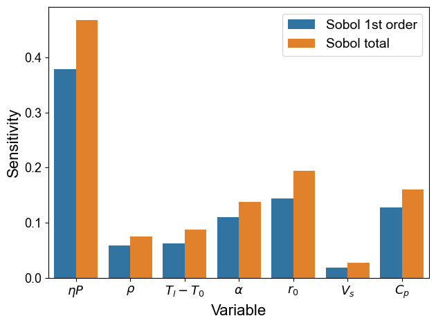
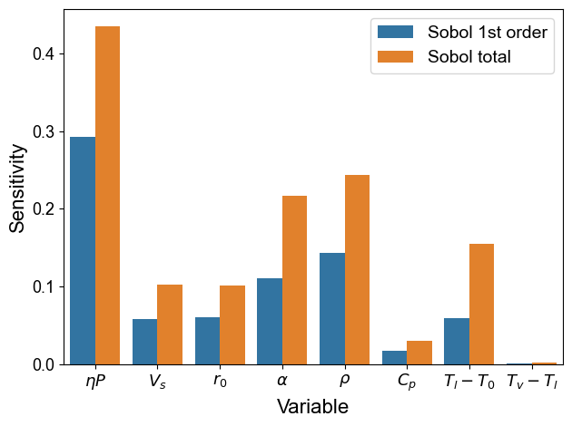

Tutorial 1.4: Sensitivity analysis
Contents
Tutorial 1.4: Sensitivity analysis#
Authors: Xiaoyu Xie
Contact: xiaoyuxie2020@u.northwestern.edu


import matplotlib.pyplot as plt
import numpy as np
import pandas as pd
from SALib.analyze import sobol
from sklearn.linear_model import LinearRegression
from sklearn.preprocessing import PolynomialFeatures
from SALib.sample import saltelli
import seaborn as sns
%matplotlib inline
plt.rcParams["font.family"] = 'Arial'
Helper functions#
def parse_data(df, para_list, output='e*'):
'''Parse the input and output parameters'''
X = df[para_list].to_numpy()
y = df[output].to_numpy()
return X, y
def calculate_bounds(df, para_list):
'''Calculate lower and upper bounds for each parameter'''
bounds = []
for var_name in para_list:
bounds.append([df[var_name].min(), df[var_name].max()])
return bounds
def train_model(X, y, coef_pi, deg):
'''Build a predictive model with polynomial function'''
# build features
pi1 = np.prod(np.power(X, coef_pi.reshape(-1,)), axis=1).reshape(-1, 1)
poly = PolynomialFeatures(deg)
pi1_poly = poly.fit_transform(pi1)
# fit
model = LinearRegression(fit_intercept=False)
model.fit(pi1_poly, y)
model.score(pi1_poly, y)
return model, poly
def SA(para_list, coef_pi, bounds, model, poly, sample_num=2**10):
'''Sensitivity analysis'''
problem = {'num_vars': len(para_list), 'names': para_list, 'bounds': bounds}
# Generate samples
X_sampled = saltelli.sample(problem, sample_num, calc_second_order=True)
pi1_sampled = np.prod(np.power(X_sampled, coef_pi.reshape(-1,)), axis=1).reshape(-1, 1)
pi1_sampled_poly = poly.transform(pi1_sampled)
Y_sampled = model.predict(pi1_sampled_poly).reshape(-1,)
print(Y_sampled.shape)
# Perform analysis
Si = sobol.analyze(problem, Y_sampled, print_to_console=True)
return Si
def plot(Si, xtick_labels):
'''Visualization'''
total_Si, first_Si, second_Si = Si.to_df()
total_Si['Type'] = ['Sobol total'] * total_Si.shape[0]
total_Si = total_Si.rename(columns={'ST': 'Sensitivity', 'ST_conf': 'conf'})
total_Si.index.name = 'Variable'
total_Si.reset_index(inplace=True)
first_Si['Type'] = ['Sobol 1st order'] * first_Si.shape[0]
first_Si = first_Si.rename(columns={'S1': 'Sensitivity', 'S1_conf': 'conf'})
first_Si.index.name = 'Variable'
first_Si.reset_index(inplace=True)
res_df = pd.concat([first_Si, total_Si]).reset_index(drop=False)
# res_df = res_df.reindex(combined_df_index)
fig = plt.figure()
ax = sns.barplot(data=res_df, x='Variable', y='Sensitivity', hue='Type')
ax.set_xticklabels(xtick_labels)
ax.legend(fontsize=14)
ax.set_xlabel('Variable', fontsize=16)
ax.set_ylabel('Sensitivity', fontsize=16)
ax.tick_params(axis='both', which='major', labelsize=13)
plt.tight_layout()
Load keyhole dataset#
# load data
df = pd.read_csv('../dataset/dataset_keyhole.csv')
df.describe()
| etaP | Vs | r0 | alpha | rho | cp | Tv-T0 | Lv | Tl-T0 | Lm | e | Ke | e* | |
|---|---|---|---|---|---|---|---|---|---|---|---|---|---|
| count | 90.000000 | 90.000000 | 90.000000 | 90.000000 | 90.000000 | 90.000000 | 90.000000 | 9.000000e+01 | 90.000000 | 90.000000 | 90.000000 | 90.000000 | 90.000000 |
| mean | 143.036444 | 0.733889 | 0.000053 | 0.000013 | 3949.633333 | 872.222222 | 3130.533333 | 9.197967e+06 | 1480.044444 | 296511.111111 | 0.000173 | 9.981230 | 3.520206 |
| std | 85.162496 | 0.267933 | 0.000010 | 0.000008 | 997.040085 | 117.939022 | 275.287641 | 9.413036e+05 | 342.642865 | 33657.309487 | 0.000129 | 7.220693 | 2.799219 |
| min | 31.400000 | 0.300000 | 0.000044 | 0.000005 | 2415.000000 | 790.000000 | 2499.000000 | 6.336000e+06 | 622.000000 | 260000.000000 | 0.000015 | 1.545937 | 0.208731 |
| 25% | 73.825000 | 0.600000 | 0.000048 | 0.000010 | 3920.000000 | 830.000000 | 3267.000000 | 9.255000e+06 | 1630.000000 | 286000.000000 | 0.000071 | 4.197719 | 1.300126 |
| 50% | 120.160000 | 0.700000 | 0.000048 | 0.000010 | 3920.000000 | 830.000000 | 3267.000000 | 9.255000e+06 | 1630.000000 | 286000.000000 | 0.000146 | 7.947395 | 2.925625 |
| 75% | 192.895000 | 1.000000 | 0.000066 | 0.000010 | 3920.000000 | 830.000000 | 3267.000000 | 9.255000e+06 | 1630.000000 | 286000.000000 | 0.000252 | 14.359714 | 5.232955 |
| max | 342.600000 | 1.200000 | 0.000070 | 0.000032 | 6881.000000 | 1170.000000 | 3267.000000 | 1.053000e+07 | 1630.000000 | 380000.000000 | 0.000562 | 37.772286 | 12.772727 |
Analysis for Ke#
# config
para_list = ['etaP', 'Vs', 'r0', 'alpha', 'rho', 'cp', 'Tl-T0']
coef_pi = np.array([1, -0.5, -1.5, -0.5, -1, -1, -1]) # for Ke
deg = 3
# choose parameters
X, y = parse_data(df, para_list)
# calculate bounds
bounds = calculate_bounds(df, para_list)
# train mdoel
model, poly = train_model(X, y, coef_pi, deg)
# calculate sensitivity
Si = SA(para_list, coef_pi, bounds, model, poly)
(16384,)
ST ST_conf
etaP 0.468911 0.057476
Vs 0.075444 0.009678
r0 0.086941 0.011307
alpha 0.137722 0.017747
rho 0.194494 0.026497
cp 0.026777 0.003563
Tl-T0 0.160593 0.021289
S1 S1_conf
etaP 0.379400 0.054989
Vs 0.058095 0.029457
r0 0.061965 0.026137
alpha 0.110631 0.028978
rho 0.144342 0.044111
cp 0.018855 0.012346
Tl-T0 0.128264 0.038494
S2 S2_conf
(etaP, Vs) 0.008929 0.075756
(etaP, r0) 0.014155 0.074338
(etaP, alpha) 0.010734 0.077357
(etaP, rho) 0.042107 0.076853
(etaP, cp) 0.003964 0.069879
(etaP, Tl-T0) 0.018733 0.079032
(Vs, r0) -0.003869 0.049656
(Vs, alpha) -0.006055 0.044828
(Vs, rho) 0.000813 0.045138
(Vs, cp) -0.007282 0.045349
(Vs, Tl-T0) -0.000395 0.048050
(r0, alpha) 0.003093 0.045964
(r0, rho) -0.001922 0.043444
(r0, cp) 0.002067 0.041228
(r0, Tl-T0) 0.001900 0.043503
(alpha, rho) -0.000030 0.052216
(alpha, cp) -0.015239 0.050788
(alpha, Tl-T0) -0.006766 0.055997
(rho, cp) 0.000069 0.067579
(rho, Tl-T0) -0.008466 0.067454
(cp, Tl-T0) -0.002182 0.025503
/tmp/ipykernel_22980/3367990274.py:32: DeprecationWarning: `salib.sample.saltelli` will be removed in SALib 1.5. Please use `salib.sample.sobol`
X_sampled = saltelli.sample(problem, sample_num, calc_second_order=True)
xtick_labels = [r'$\eta P$', r'$\rho$', r'$T_l-T_0$', r'$\alpha$', r'$r_0$', r'$V_s$', r'$C_p$']
# sort the sensitivity from high to low
# combined_df_index = [0, 4, 6, 3, 2, 1, 5, 0+7, 4+7, 6+7, 3+7, 2+7, 1+7, 5+7]
plot(Si, xtick_labels)

Add one more parameter \(T_v-T_l\)#
# config
para_list = ['etaP', 'Vs', 'r0', 'alpha', 'rho', 'cp', 'Tl-T0', 'Tv-T0']
coef_pi = np.array([1, -0.5, -1.5, -0.5, -1, -1, -0.75, -0.25]) # for table 3, 2nd row
deg = 3
# choose parameters
X, y = parse_data(df, para_list)
# calculate bounds
bounds = calculate_bounds(df, para_list)
# train mdoel
model, poly = train_model(X, y, coef_pi, deg)
# calculate sensitivity
Si = SA(para_list, coef_pi, bounds, model, poly)
/tmp/ipykernel_22980/3367990274.py:32: DeprecationWarning: `salib.sample.saltelli` will be removed in SALib 1.5. Please use `salib.sample.sobol`
X_sampled = saltelli.sample(problem, sample_num, calc_second_order=True)
(18432,)
ST ST_conf
etaP 0.435631 0.139925
Vs 0.102755 0.031568
r0 0.101415 0.030575
alpha 0.216431 0.061135
rho 0.243284 0.097891
cp 0.029825 0.007978
Tl-T0 0.154469 0.084326
Tv-T0 0.001798 0.001013
S1 S1_conf
etaP 0.293056 0.078912
Vs 0.058431 0.028938
r0 0.060356 0.029490
alpha 0.111009 0.047318
rho 0.143368 0.056223
cp 0.017399 0.012953
Tl-T0 0.059561 0.032806
Tv-T0 0.000351 0.002503
S2 S2_conf
(etaP, Vs) 0.001401 0.067550
(etaP, r0) -0.004557 0.067474
(etaP, alpha) 0.022270 0.086731
(etaP, rho) 0.009413 0.077915
(etaP, cp) -0.011741 0.065533
(etaP, Tl-T0) 0.010808 0.078665
(etaP, Tv-T0) -0.008894 0.066391
(Vs, r0) -0.008851 0.048831
(Vs, alpha) -0.008343 0.066103
(Vs, rho) -0.010061 0.057161
(Vs, cp) -0.009823 0.046616
(Vs, Tl-T0) -0.006326 0.059342
(Vs, Tv-T0) -0.009010 0.045725
(r0, alpha) -0.013241 0.052123
(r0, rho) 0.000213 0.055188
(r0, cp) -0.009465 0.044106
(r0, Tl-T0) -0.001906 0.062411
(r0, Tv-T0) -0.009262 0.045346
(alpha, rho) 0.012296 0.130325
(alpha, cp) -0.010145 0.092776
(alpha, Tl-T0) -0.018565 0.101841
(alpha, Tv-T0) -0.006149 0.092846
(rho, cp) -0.022207 0.080013
(rho, Tl-T0) -0.009719 0.079842
(rho, Tv-T0) -0.025940 0.077878
(cp, Tl-T0) 0.000179 0.023369
(cp, Tv-T0) -0.003383 0.018646
(Tl-T0, Tv-T0) -0.000089 0.061288
xtick_labels = [r'$\eta P$', r'$V_s$', r'$r_0$', r'$\alpha$', r'$\rho$',
r'$C_p$', r'$T_l-T_0$', r'$T_v-T_l$']
plot(Si, xtick_labels)

Add one more parameter \(L_m\)#
# config
para_list = ['etaP', 'Vs', 'r0', 'alpha', 'rho', 'cp', 'Tl-T0', 'Lm']
coef_pi = np.array([1, -0.5, -1.5, -0.5, -1, -0.75, -0.75, -0.25]) # for table 4, 3rd row
deg = 3
# choose parameters
X, y = parse_data(df, para_list)
# calculate bounds
bounds = calculate_bounds(df, para_list)
# train mdoel
model, poly = train_model(X, y, coef_pi, deg)
# calculate sensitivity
Si = SA(para_list, coef_pi, bounds, model, poly)
/tmp/ipykernel_22980/3367990274.py:32: DeprecationWarning: `salib.sample.saltelli` will be removed in SALib 1.5. Please use `salib.sample.sobol`
X_sampled = saltelli.sample(problem, sample_num, calc_second_order=True)
(18432,)
ST ST_conf
etaP 0.407922 0.166863
Vs 0.114861 0.039682
r0 0.109062 0.044820
alpha 0.253861 0.098747
rho 0.295320 0.171750
cp 0.018771 0.007262
Tl-T0 0.216055 0.189832
Lm 0.005355 0.003982
S1 S1_conf
etaP 0.246249 0.087989
Vs 0.053234 0.025223
r0 0.051079 0.029041
alpha 0.101483 0.040503
rho 0.127977 0.055470
cp 0.008455 0.006879
Tl-T0 0.051638 0.024807
Lm 0.000703 0.003419
S2 S2_conf
(etaP, Vs) -0.001122 0.068361
(etaP, r0) -0.008193 0.062748
(etaP, alpha) 0.019447 0.095312
(etaP, rho) 0.006793 0.082386
(etaP, cp) -0.014905 0.061269
(etaP, Tl-T0) 0.011559 0.076316
(etaP, Lm) -0.010896 0.061817
(Vs, r0) -0.011737 0.050977
(Vs, alpha) -0.012059 0.069218
(Vs, rho) -0.014467 0.056443
(Vs, cp) -0.012331 0.044746
(Vs, Tl-T0) -0.009250 0.059068
(Vs, Lm) -0.011251 0.044309
(r0, alpha) -0.008149 0.052866
(r0, rho) 0.008530 0.055545
(r0, cp) -0.004924 0.043414
(r0, Tl-T0) 0.006490 0.074495
(r0, Lm) -0.003403 0.045918
(alpha, rho) 0.024897 0.131486
(alpha, cp) -0.007572 0.081769
(alpha, Tl-T0) -0.015623 0.085296
(alpha, Lm) -0.002525 0.084410
(rho, cp) -0.023625 0.075686
(rho, Tl-T0) -0.006633 0.076635
(rho, Lm) -0.025646 0.074063
(cp, Tl-T0) 0.000633 0.014314
(cp, Lm) -0.002598 0.011344
(Tl-T0, Lm) 0.005331 0.064235
xtick_labels = [r'$\eta P$', r'$V_s$', r'$r_0$', r'$\alpha$', r'$\rho$',
r'$C_p$', r'$T_l-T_0$', r'$L_m$']
plot(Si, xtick_labels)